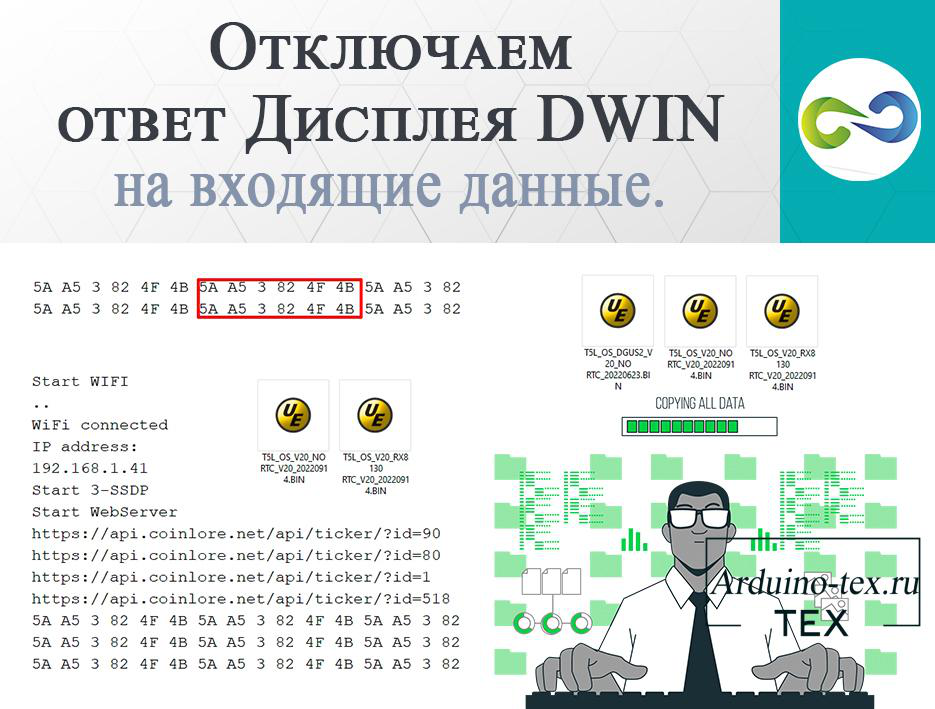

Уроки по работе с дисплеями HMI компании DWIN.
У меня на сайте есть блок уроков по программированию HMI дисплеев Nextion. Так как принцип работы с дисплеями HMI компании DWIN отличается, я создал данный раздел, чтобы вы смогли найти всю необходимую информацию для создания своих проектов с использованием HMI дисплеев DWIN.
Урок 9: Создаем интерфейс управления реле для HMI дисплея DWIN в бесплатном Онлайн-конструкторе
Для того, чтобы создать интерфейс управления реле для HMI дисплея DWIN, нам понадобится использовать бесплатный Онлайн-конструктор, а также программы Pinta и DGUS_V7.642. В этом уроке мы покажем вам, как создать графические элементы и страницу интерфейса для дисплея, а также как загрузить прошивку на дисплей и протестировать его работу.
Шаг 1: Использование бесплатного Онлайн-конструктора
Первым шагом для создания интерфейса управления реле для HMI дисплея DWIN является использование бесплатного Онлайн-конструктора. В этом конструкторе можно создавать различные элементы интерфейса, такие как кнопки, фоны, иконки и т.д.
14 апреля 2023 201
Подробнее …
При создании проектов с использованием сенсорного HMI дисплея DWIN часто возникает потребность управлять функциями дисплея с микроконтроллера (МК), такого как Arduino, ESP8266, ESP32, STM32 и других. Параметров для управления достаточно много. Сегодня рассмотрим основные и часто используемые: управление яркостью подсветки, включение и выключение звукового уведомления при нажатии на тачскрин, переход по страницам проекта и перезагрузка дисплейного модуля с помощью команды с микроконтроллера.
Где посмотреть, какими параметрами можно управлять с МК?
23 декабря 2022 247
Подробнее …
Урок 7. Отключаем ответ дисплея DWIN на входящие данные.

При отправке данных на дисплей DWIN дисплей в ответ оправляет "5A A5 03 82 4F 4B". Это сигнализирует о том, что данные получены. Если организовать проверку, прислал дисплей данные "5A A5 03 82 4F 4B" или нет, это поможет определить, поступили данные на дисплей или нет. Жалко, что нет контроля целостности данных, но тема статьи совсем о другом. Сегодня поговорим о том, как отключить подтверждение принятого пакета данных. Сейчас расскажу, где это может понадобиться и как восстановить подтверждение принятого пакета данных.
Для чего нужно отключать подтверждение принятого пакета данных дисплеем DWIN
16 декабря 2022 219
Подробнее …
Урок 6. Спидометр на дисплее DWIN. Стрелочный индикатор.
Дисплеи DWIN бывают не только с резистивным и ёмкостными тачскрином. Но есть дисплеи без сенсора, которые предназначены для вывода информации. Такие дисплеи можно использовать, например, для создания приборной панели в авто. В рамках данного урока сделаем спидометр для автомобиля, а показание будем изменять с помощью двух потенциометров. На практике можно использовать делитель напряжения для получения данных в нужном диапазоне.
Создаём интерфейс будущего спидометра на дисплее DWIN.
29 сентября 2022 274
Подробнее …
Урок 5. Заставка со скроллингом изображения на дисплее DWIN.
Для того чтобы покупатель знал, кто произвел оборудование, часто на устройствах с дисплеями делают приветственную страницу. Также данная страница служит защитой от ошибок, которые могут возникнуть, пока микроконтроллер не загрузился, а управление с дисплея уже доступно. Поэтому во многих проектах делаю заставку.
Чаще всего это просто картинка, которая появляется на определённое время. Обычно на 3-5 секунд. Или пока не загрузится микроконтроллер и будет готов к работе.
Создаём страницу со скроллингом части изображения.
23 августа 2022 197
Подробнее …
Урок 4. Выводим кнопку на дисплей DWIN. Среда разработки DGUS.

Продолжаем изучать среду разработки DGUS (DWIN Graphic Utilized Software). Данное программное обеспечение позволяет создавать красивые интерфейсы для HMI дисплеев компании DWIN. Сегодня на уроке научимся создавать кнопки. В этом нам поможет инструмент «Return Key code». Информацию о других инструментах среды разработки DGUS вы можете прочитать в разделе сайта «DWIN».
Создаём кнопку на дисплее DWIN.
18 июля 2022 250
Подробнее …
Урок 3. Создаем переключатели (кнопки с фиксацией) на дисплее DWIN.
В предыдущем уроке мы познакомились со средой разработки DGUS (DWIN Graphic Utilized Software). Подготовили фоновые изображения и иконки, после чего проверили отображение графики на дисплее. Сегодня научимся создавать кнопки с фиксацией или переключатели на дисплее DWIN. В этом нам помогут два инструмента: «Bit icon», «Incremental Adjustment».
Инструменты для создания переключателя (кнопки с фиксацией) в среде разработки DGUS.
13 июля 2022 277
Подробнее …
Урок 2. MP3 звуки при касании сенсора дисплея DWIN.
В проектах с дисплеем DWIN я уже показывал, что можно сделать звук при касании сенсора. Это привычное для всех пищание зуммера. Иногда данный звук даже нет желания использовать, так как он достаточно противный. В конфигурационном файле .CFG можно настроить тональность, но это тоже не то, что нужно. Хотелось бы использовать свой звук, желательно в .mp3 формате. Для этого дисплей DWIN имеет возможность загрузить свои звуки. Что для этого нужно и как использовать, сейчас разберём в данном уроке.
21 июня 2022 254
Подробнее …
Урок 1. Знакомство со средой разработки DGUS - DWIN. Подготовка изображений.

В данном уроке познакомимся со средой разработки DGUS (DWIN Graphic Utilized Software). Рассмотрим, как подготовить изображения для проекта с использованием дисплея компании DWIN. Подробно разберём, как загрузить изображения в проект и подготовить основные файлы проекта.
Среда разработки DGUS.
Давайте рассмотрим программу DGUS (сокращение от DWIN Graphic Utilized Software) и основные формируемые файлы для работы. Ниже представлена краткая диаграмма разработки ПО.
25 мая 2022 243
Подробнее …